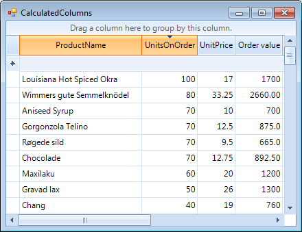

Calculated Columns (Column Expressions)
A calculated column is identified by an expression. The only condition necessary to make a regular column behave like a calculated column is to set an expression to it.
The following code snippet demonstrates how the standard deviation of the *Consumption *column can be computed for each month in the *Deviation *column.
[C#] Creating a calculated column
GridViewDecimalColumn col = new GridViewDecimalColumn();
col.Name = "Calculated Column";
col.HeaderText = "Order value";
radGridView1.Columns.Add(col);
radGridView1.Columns["Calculated Column"].Expression = "UnitsOnOrder * UnitPrice";
[VB.NET] Creating a calculated column
Dim col = New GridViewDecimalColumn()
col.Name = "Calculated Column"
col.HeaderText = "Order value"
RadGridView1.Columns.Add(col)
RadGridView1.Columns("Calculated Column").Expression = "UnitsOnOrder * UnitPrice"

Expressions
An expression is evaluated to a value by combining values from multiple cells of the same row and aggregates on the columns using the provided operators.
For decimal columns, you can use simple arithmetic operators like + and *. You can also use logical operators like '=' and '<'.
Boolean operators (AND, OR, NOT) are also allowed as well as more complex operators like IN, LIKE, and % (modulus). Operators take the usual precedence. You can alter this precedence using parentheses.
The wildcards % and * are supported for Text columns, but only at the beginning or the end of a string. Column names are used as keywords and must be unquoted. Names (strings) must always be single-quoted.
Example 1:
Country = 'USA'
Year >= 1999 And LastName LIKE 'A%'
Price * 0.2 + Freight
Dates must be surrounded by the # character.
Example 2:
HireDate #2-1-2002#
The expression parser does not recognize the __Enum__values unless you cast them to an actual value or type.
Decimal values can be used as long as they are represented by a literal matching the current system locale.
The IIF function can be used to evaluate a predicate.
Example 3:
"IIF(total > 1000, 'expensive', 'dear')
Advanced usage
Refer to the following external resource about further information on the expressions syntax:
http://msdn.microsoft.com/en-us/library/system.data.datacolumn.expression%28VS.80%29.aspx